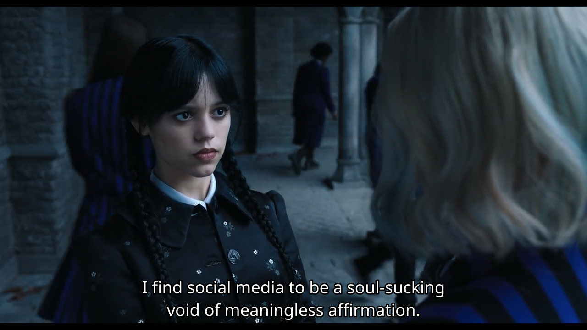

War to make humanity a better place
Aagaman Luitel | words: 522 | 2 minutes |Tl;dr stop social media. Its meaningless and will ruin you internally like a plague.
Introduction
I’ve been restricting myself from social media these days. This includes all my online activity including youtube. Its all meaningless. Most people don’t find joy using social platforms, its just because they are bored. I unknowingly became those npc. This is my way of taking my life back from this validation loop.
What is social media?
Thing that puts you in a fake validation loop to make you think that you are/have/will/might achieve something when in fact you ultimately do nothing and scroll a 50mb app and wait for something to happen so you could cure and grow your boredom.
Here is kind of detailed explanation what it really is https://files.eric.ed.gov/fulltext/EJ1248481.pdf
Fake belief
Some say, one of the “perk” of social media is “you will know whats happening on world”. This drives me nuts. There are 8 billion people on earth. Of course something is always happening in world. Why do you need to know it? If its serious you will obviously know it somehow or other. A good example is pre and post covid times.
Thinking pattern one should develop
I don’t care if you travel somewhere. Its not me travelling.
I don’t want to listen to your opinions [1] [2]. Mine are plenty enough already.
I don’t want to take part on your drama nor do I wish to know your daily life.
I don’t want to know something meaningless. (Basically every productive reddit groups)
I don’t care about your dance nor do I like those tryhard memes.

So now what?
What worked for me
I’ve decided to read books. One of the main reason for not reading books was literally the need for a library system. I wanted a fast book manager with good reader. I once hacked my own but it was web based and pdf on web was not a good experience. I am using calibre with sioyek now and I couldn’t become more happier. Calibre also has automatic feed to pdf thingy. I’ve set it to fetch lwn and hn every friday to read. Plenty of news content if something major happens :)
I’ve also put the show bookmark to always in brave so I have something to click when I’m bored instead of going back to validation loop on some pathetic social media.
Suggestions
For others I would just say don’t give more than 5 minutes to your social media per day. It ruins your thinking pattern. Also think “what will I gain from this?” everytime you consume any content. If its just for boredom then stop that immediately and think what you really want to do and become… except npc obviously. There are billion things that make you productive and happy from simple things like understanding arts to learning mathematical concepts. You just need to start somewhere.
Note
I kind of use mastodon just
because it doesn’t provide any feedback loop or generalized content so I won’t
spend more than 5 mins even if I want to. My home feed makes me smile and thats
what I all care. It should make you happy not guilty.